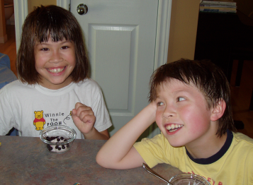

David Goodger’s Personal Beliefs
| pronounced: | like “Badger”, but Good! |
|---|---|
| email: | goodger@python.org |
A collection of truths, axioms, and biases.
Contents
Worldview
I am a humanist/rationalist/naturalist, and therefore an atheist.
In the past I eschewed the label “atheist” because it describes only an absence, a negative. If I label myself an atheist it would only describe what I am not: I don’t believe in supernatural creators. This is true, but it’s only the consequence of what I do believe, which is much more important. When asked [e.g. on a census form] what my religion is, I answer “none”; atheism is not a religion, it is the absence of religion.
Now I embrace the label of atheist, as a shorthand for “agnostic to the point of atheism”. Of course, it’s impossible to prove the non-existence of a creator, as it is impossible to prove a negative (“the absense of evidence is not evidence of absence”). However, as Carl Sagan stated,
Extraordinary claims require extraordinary evidence.
The existence of a supreme being is a very extraordinary claim indeed, and I have seen no convincingly extraordinary evidence to support it. Anecdotes, feelings of awe, ancient scrolls, questionably-reported history, tradition, the beliefs of others, and ignorance, are not evidence.
(By the way, you’re an atheist too. Even if you believe in the Judeo-Christian “God”, you certainly don’t believe in Osiris, or Vishnu, or Zeus, or Odin, or Amaterasu, or any of the other gods of human history. You’re an Osiris/Visnu/Zeus/Odin/Amaterasu/etc.-atheist. So am I. I simply believe in one god fewer, for a grand total of zero. It’s much simpler that way.)
I am an ethical, moral person. My ethics and morals come from respect, love, and awe for the nature of the universe, society, and for life itself.
I “believe” in science, but it is a rational and revisable belief, based on evidence and reproducible, verifiable, and falsifiable experiment. The essential difference, as I see it, is this: science is evidence without faith, while religion is faith without evidence. I try to remain open-minded: I am willing to entertain the idea that I am wrong, and I am willing re-examine my beliefs, given compelling new evidence.
Rather than stating “I believe in science,” it may be more accurate to state that “I trust the process of science and the scientific method,” because science works. Given enough time and resources, I could reproduce the experiments and observations that have produced our current understanding of the laws of nature. Is it complete? No, but it’s more complete than it was yesterday, and will be more complete tomorrow.
I am generally tolerant of religions, superstitions, and other supernatural belief systems — even though I find them irrational and misguided at best — as long as it is kept personal. What I cannot tolerate is someone imposing their worldview on me or on others.
Parenting
A great book for new parents is The First Three Years of Life, by Burton L. White. Rather than giving a cookie-cutter recipie for all kids (who are all different), it gives insight into the thought processes of children from newborns to 3 years of age, and tips for humane discipline. A newborn’s cry is very different from a 1-year-old’s cry.
- Children need structure and discipline in their lives. They need to have clear and enforced limits.
- Corporal punishment is never the solution. It is completely unacceptable to strike a child (or an adult, except in self-defense).
- Children will test their limits. But that’s a good sign, and shouldn’t be discouraged too much.
- Raising young children is a more-than-full-time job. The ideal child-raising environment includes at least one full-time parent.
- Parents have to decide how much time to devote to their children, and how much money they want to make. It’s a compromise.
- Full-time parenting is a hard job, and parents need breaks!
- A license is required to drive a car, but not to raise a child. That’s a real shame, because there are so many bad parents out there.
Marriage
- Marriage is a lifelong commitment. If you’re not absolutely committed to spending your entire life with your significant other, don’t get married.
- Many people enter into marriage lightly, and the high divorce rate is the result.
- Sometimes relationships can be hard, but you have to persevere. Marriage does not allow for quitters.
- Marriage implies — or should imply — unconditional love.
- For better or for worse, in richer and in poorer... these are vows. They’re not just platitudes that can be ignored when they prove inconvenient.
Operating Systems
The Mac, with OS X, is the best desktop computing platform around for non-techno-geeks. The hardware is solid, and the software just works. It’s the best of both worlds: a world-class graphical user interface on top of a solid and secure BSD Unix foundation. On my Mac, I can get stuff done, without having to fiddle.
See my Mac OS X page.
GNU/Linux is an excellent operating system for servers and hobbyists. It has even become usable on the desktop for ordinary people.
The Ubuntu distribution of GNU/Linux (based on Debian) is an excellent choice, both for servers and for the desktop. It’s what I use.
Windows sucks. But if you’re a Unix/Linux-head and have to use it, be sure to install Cygwin.
Windows users are simply the unfortunates who have never tried Macs. They should be pitied, and they should be enlightened.
Software
Information wants to be free. Data wants to be free. Software wants to be free.
Any attempt to restrict access to data via DRM (digital restrictions management) is bound to fail. “DRM” is also known as Content Restriction Annulment and Protection, or “CRAP”.
Free/Libre and Open-Source Software (FOSS or FLOSS) is the way of the future, and it’s here today.
Choose Free software. Free as in freedom, as in free speech.
Compare operating systems to automobiles. Windows is like a car with its hood locked shut, and only Microsoft has the keys. Although you can repaint the car or add fuzzy dice, only Microsoft can modify the engine. The GNU/Linux car’s engine is open and accessible; the blueprints and schematics can be found in the glove compartment. You can study it, take it apart, modify it, fix it yourself or have someone fix it for you.
But since this is software and not automobiles we’re talking about, you can also copy Free software and share it with your friends, neighbors, or even the whole world. People will thank you. Try to do what with proprietary software and the police will arrest you.
With Free software, you have the freedom to do whatever you like.
Software patents are evil and wrong, and “clearly a menace to society and innovation” (Georg Greve, president of the Free Software Foundation Europe).
Emacs rocks. But it’s not for everyone.
Programming
Python is the best programming language out there, bar none. It scales from short scripts to large systems, and is applicable to the whole range of developers, from beginners to experienced gurus. The only thing that it isn’t applicable to is some speed-sensitive applications, like some device drivers and the kernels of operating systems.
I value my freedom much more than any false sense of safety or security provided by other languages (like C++, Java, etc.).
And Python fits my brain.
Extreme Programming (XP) is a great set of lightweight practices that help project teams produce excellent software efficiently. It may not be universally applicable, but it’s definitely worth a look.
UML is useful for formally documenting a system, and has its place in the planning process. But it can easily be overused and abused, and often is. It’s a tool, but it’s no silver bullet.
Copyright

The U.S. has been pushing global copyright terms to extremes, and must be reined in. Copyright now lasts far too long. Every time that Steamboat Willie (the first incarnation of Mickey Mouse) nears the end of his copyright term, the U.S. Congress passes a law to extend copyright terms. The current copyright term is the author’s lifetime plus 70 years for individual works, or 95 years for corporate works.
The chances of anything created today entering the public domain in our lifetimes is close to nil!
The Canadian copyright Bill C-60 is a bad bill. It aims to import the US copyright term extensions and fair use limitations to Canada.
Miscellaneous
- People carrying on extended conversations on cell phones in restaurants, in elevators, and on public transportation are loud, rude, and obnoxious.
- Toilet paper should be installed so that the hanging end is away from the wall.
- Men should not use sit-down toilets as stand-up urinals. If you don’t believe this, you probably don’t clean your own bathroom. Perhaps this makes me a sitzpinkler, I don’t care. Hell, I also enjoy the occasional quiche.
- The best configuration for recumbent cycling is short-wheelbase, under-seat steering. This is merely my belief and personal preference though, untested.